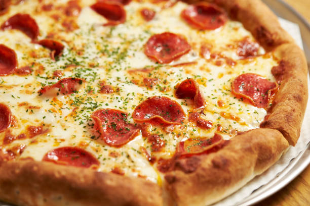

Pizza

Over the last while I have slowly been
trying to free up some space in my freezer and I
recently came across some pizza sauce that I had
left over after making a pizza a while back.
As soon as I stumbled upon it I remembered
thinking that I had wanted to use it to
make a hot cheesy pizza dip when I put
it in the freezer. Once I had that thought there was no
turning back and I was already dreaming up recipes for the dip.
Ingredients
- 1/4 cup sour cream
- 1 cup pizza sauce
- 2 tbsps green pepper sliced
- 1/4 cup mayonnaise
- 2 tbsps black olives sliced
Steps
- Mix the cream cheese, sour cream mayonnaise, mozzarella and parmesan and spread it across the bottom of a pie plate.
- Spread the pizza sauce on top and sprinkle on the cheese, pepperoni, green pepper and olives.
- Bake in a preheated 350F/180C oven until the sides are bubbling and the cheese cheese has melted and turned golden brown on top, about 20-30 minutes.